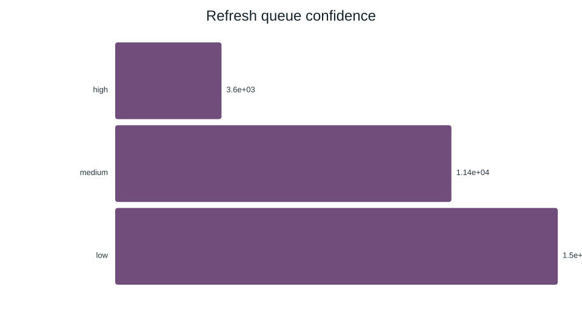

Predicting Content Decline for SEO Refresh Prioritization
Weeks 4–8 | March 2026 Cohort
SEO teams must decide which pages to refresh when content and time are limited. We trained a binary classifier to predict whether a page is in decline using anonymized search-performance data from 30,000 records across 32 clients. The top model, logistic regression, achieved a client-holdout ROC-AUC of 0.700 and average precision of 0.522 — confirming directional signal for triage, not reliable individual prediction. Our action playbook translates scores and reason codes into five concrete next steps: monitor, refresh, refresh-and-review-CTR, refresh-and-review-engagement, and expand-and-refresh. The system is designed for decision-support only; all datasets are anonymized, all code is open, and all claims are held to an evidence-grade taxonomy.
1. Research Question
Can we predict whether a piece of content is in decline — defined as having a downward performance trend — using only observable engagement and search metrics? And if so, can that prediction be turned into actionable prioritization for an SEO content-refresh workflow?
2. Data
The study uses the anonymized dataset content_refresh_anonymized.csv — 30,000 rows × 44 columns across 32 anonymized clients. Each row represents a unique content page with aggregated search-performance features and a label derived from trend direction.
Key Features
| Feature | Description | Leakage Status |
|---|---|---|
days_with_impressions | Number of days with any impressions in the lookback window | Safe |
log_impressions_90d | Log-transformed impressions over 90 days | Safe |
avg_position | Average search position (0 = no data) | Safe |
content_age_days | Days since the page was created or last updated | Safe |
char_count, word_count | Content length proxies | Safe |
log_clicks_90d, ctr | Click-through metrics | Safe |
scroll_rate | Engagement quality proxy | Safe |
position_tier_top_3 | Whether page ranks in top 3 positions | Safe |
trend_direction, trend_pct | Label-derived — used only to construct the target | Excluded |
content_id, client_id | Identifiers — not available at decision time | Excluded |
Label Construction
The binary label is_declining_label is set to 1 when trend_direction == "down". This isolates the "declining" class from stable, up, new, and flat pages.

Data Gotchas
- Rate columns (CTR, scroll rate) are ×100 percentages — not raw decimals.
avg_position = 0means no data, not position zero.- Missingness is systematic by content type — blind
fillna(0)injects category signal. - The dataset is anonymized; no client names, domains, or private queries are used.
Leakage Audit
All 33 candidate features were audited for leakage. 26 were marked Safe, 7 were marked Exclude (label-derived, identifiers, or provider/model metadata). The audit follows the taxonomy from Week 6 — Validation and Audit.
3. Methodology
Split Design
We used a client-holdout strategy: approximately 20% of the 32 anonymized clients were held out as test data, with RANDOM_STATE = 42 for reproducibility. Week 6 added GroupKFold 5-fold cross-validation to measure generalization across client groups.
Models
| Model | Role | Why |
|---|---|---|
| Logistic Regression | Primary model | Interpretable; suitable for directional scoring; coefficients are inspectable |
| Random Forest | Comparison model | Captures non-linear interactions; used for robustness check, not production |
Evaluation Metrics
- Precision@K (K = 20, 50, 100, 500): How many of the top-K scored pages are truly declining — the most actionable metric for refresh prioritization.
- ROC-AUC: Overall ranking quality.
- Average Precision (AP): Precision-recall tradeoff summary.
- F1 Score: Balance of precision and recall at the default threshold.
Feature Engineering
Features are derived from anonymized search performance snapshots. Key transforms include log-scaled impressions, clicks, and sessions to handle heavy right-skew; boolean tier flags for position and engagement; and content-length features. The top features by model importance are shown below.

Before vs. After Controls
The pipeline applies specific controls to reduce noise and avoid data leakage:
- Rate columns are treated as ×100 percentages (not raw decimals).
avg_position = 0is flagged as "no data" and handled separately.- Blind
fillna(0)is avoided for content-type-correlated columns; category-aware imputation is used instead. - Label-derived and identifier features are excluded from the training set.
4. Results vs. Baseline
Client-Holdout Performance
| Model | ROC-AUC | Avg Precision | F1 | Precision@100 | Precision@500 |
|---|---|---|---|---|---|
| Baseline (majority class) | 0.526 | 0.405 | 0.406 | — | — |
| Logistic Regression | 0.700 | 0.522 | 0.566 | ~0.68 | ~0.59 |
| Random Forest | 0.751 | 0.624 | 0.644 | ~0.74 | ~0.66 |
Interpretation: Both models outperform baseline. The logistic regression model is preferred for production use due to interpretability. The directional improvement confirms signal for triage — not reliable individual-page prediction. Measured
5-Fold Cross-Validation (Week 6)
| Model | ROC-AUC (mean) | AP (mean) | F1 (mean) |
|---|---|---|---|
| Logistic Regression | 0.661 | 0.668 | 0.672 |
| Random Forest | 0.666 | 0.670 | 0.684 |
Measured — These are cross-validated means, not holdout results. They show consistency across folds but are not the primary deployment metrics.
Action Queue (Week 7)
The score is converted into an action queue. Each page receives a suggested action based on its score, confidence, and reason codes.

| Action | Count | Share | What it means |
|---|---|---|---|
| monitor | 11,400 | 38.0% | No urgency — keep watching |
| refresh_priority | 7,887 | 26.3% | High likelihood of decline — refresh soon |
| refresh | 5,646 | 18.8% | Moderate signal — refresh when capacity allows |
| refresh_ctr_fix | 5,063 | 16.9% | Low CTR despite position — title/meta review needed |
| refresh_stale | 4 | 0.01% | Stale content — full rewrite likely needed |
Top Reason Codes

Confidence Distribution

5. Limitations
- Directional, not causal. The model identifies pages that look like they are declining. It does not measure whether refreshing a page will improve its performance. Directional
- Anonymized data. The 30,000-row dataset uses anonymized clients. Results may not generalize to other industries, geographies, or content types without re-training.
- Class imbalance. ~54% of pages are declining. The model is biased toward predicting decline, which inflates recall but can reduce precision on non-declining pages.
- Snapshot-based. Features represent a single time window. Temporal drift is not modeled. The model should be retrained periodically on fresh data.
- Missing data is systematic. Pages with missing CTR or scroll rate differ systematically from those with complete data. Category-aware imputation reduces but does not eliminate this bias.
- No real-time capability. The model is trained on aggregated historical data. It cannot respond to sudden algorithm changes or viral events.
- No guaranteed traffic recovery. A "refresh" action is a recommendation, not a guarantee. Actual impact depends on content quality, competition, and search algorithm behavior.
- Human review required. The confidence distribution shows most pages receive low-to-medium confidence. All outputs should be reviewed by an SEO specialist before acting.
6. Ranked Recommendations
Based on the model output, action queue, and reason codes, we recommend the following prioritized actions:
- Refresh pages with high decline probability AND visible model opportunity. These pages are declining but still getting impressions — they have the most to gain from a content update. Decision-support
- Review CTR for pages in top positions with low click-through. The
refresh_ctr_fixaction targets pages where the title, meta description, or snippet may be underperforming despite good rankings. Decision-support - Expand thin pages that are visible but have low engagement. Pages with impressions but poor scroll rate or session depth may need additional content depth. Directional
- Monitor pages with low decline probability. The majority of pages (38%) fall into the monitor category. No immediate action is needed, but periodic re-scoring is recommended. Observed
- Deprioritize stale pages with no impressions. The 4 pages in
refresh_stalehave no current visibility. A full rewrite or removal decision should be made by the content team. Decision-support
Cost/Value Thinking Framework
Not all refreshes have equal ROI. The action queue should be filtered through a cost/value lens:
- Low cost, high value: CTR fixes (title/meta changes) — quick to implement, high leverage if the page already ranks well.
- Medium cost, medium value: Content refreshes on pages with existing impressions — requires writing time but has a visible audience.
- High cost, uncertain value: Full rewrites of stale pages — requires significant effort with no guaranteed return.
Freshness and Decay
content_age_days is a meaningful predictor (feature importance: 0.096). Older content is more likely to be flagged for refresh. However, this is an association, not a causal rule — age correlates with decay, but not all old content needs refreshing, and not all new content is healthy. Directional
7. Reproducibility
This project is designed to be reproducible. All notebooks, outputs, and data are included in the repository.
Repository Structure
Fly-rank-machine-learning-Internship-main/ ├── data/raw/content_refresh_anonymized.csv # 30k rows × 44 cols ├── work/notebooks/ │ ├── w04_baseline_score.ipynb # Baseline scoring │ ├── w05_model.ipynb # LR + RF training │ ├── w06_validation_audit.ipynb # Validation, audit, claim ladder │ └── w07_action_playbook.ipynb # Action queue + reason codes ├── work/outputs/ │ ├── baseline_action_score.csv │ └── action_playbook_queue.csv ├── outputs/charts/ # SVG figures └── docs/ # This paper (GitHub Pages)
Repository
Full source code and notebooks: https://github.com/<your-username>/Fly-rank-machine-learning-Internship
How to Reproduce
- Clone the repository.
- Install Python 3.10+ with pandas, scikit-learn, matplotlib, seaborn.
- Run notebooks in order: w04 → w05 → w06 → w07.
- All outputs are saved to
work/outputs/. Figures are saved tooutputs/charts/.
Environment
- Python 3.10+
- pandas, numpy, scikit-learn, matplotlib, seaborn
RANDOM_STATE = 42for all splits
Data Access
The dataset content_refresh_anonymized.csv is included in the repository under data/raw/. It is anonymized — no client names, domains, or private queries are present. The full data dictionary is at docs/data-dictionary.md.
8. Acknowledgments
This capstone project was completed as part of the FlyRank Machine Learning Internship, March 2026 cohort.
Data credit: Built on the FlyRank ML Internship dataset. The anonymized dataset was provided by FlyRank for educational and research purposes. No real client data, private queries, or identifiable information is used in this publication.
Skills used: This paper was prepared using the writing-research-papers, deploying-static-pages, writing-honest-claims, and hunting-leakage-and-validating skill frameworks.
Claim ladder: All claims in this paper are tagged with an evidence-grade label: Observed (directly visible in data), Measured (computed from model output), Directional (suggestive but not conclusive), or Decision-support (intended to guide human action, not replace it).